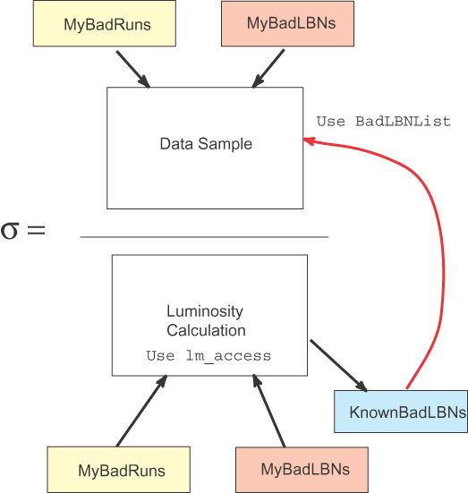

runrange_luminosity
function
This
utility will calculate the luminosity for a set of triggers and run
ranges within a data sample and return a bad lbns list for analysis
Syntax is:
runrange_luminosity
<listoffiles> <parentagepath> <runrangelist>
This
executable exists in p17 and p18 and will soon be a ups product you can
set up to get the latest official version.
The
runrange list is a file in the following format:
EM_HI_SH 175349 178233
E1_SHT20 178234 199999
........
The program
expects any good runs list to be in goodRunsList, bad runs in
badRunsList and bad lbns be in badLBNList.
Output is 3
files for each line in the runrange list
<listoffiles>_<trigger>_<runlo>-<runhi>.lum
summary of luminosity information
recorded_<listoffiles>_<trigger>-<runlo>-<runhi>.badlbns
list of bad lbns within the runrange, including the input bad runs and
lbns for recorded data
reconstructed_<listoffiles>_<trigger>.badlbns
list of bad lbns within the runrange specified, including the input bad
runs and lbns for reconstructed data (includes checks on processing)

HOW TO USE
THIS TO GET A NORMALIZED CROSS SECTION
- Get your
parentage for your sample
- If it is a
common skim, use the skim
parentage instructions (fast) Don't
forget to use the correct option for the luminosity data source: stage
file or DB.
- If it is not
a
common skim, use the lm_access
scripts to generate (very slow)
- Create a
list of files for your sample -> listname (this needs to be in the
directory as the name of the list will be used to make the output file
names).
- Create a
list of bad runs for your sample in badRunsList
Or a list of good runs in goodRunsList
- Create a
list of bad lbns for your sample in badLBNList
runrange_luminosity <listname>
<parentagepath> <runrangelist>
It will
produce a luminosity summary and lists of bad lbns for your sample this
is the OR of bad lbns from your bad runs bad lbns and those known to be
bad in the normalization. There will be separate bad run lists for each
trigger runrange choice. Use this list in your analysis!
-
In
your analysis code throw out the bad lbns from all sources
Use the
class lm_access/BadLBNList
#include
“lm_access/BadLBNList.hpp”
// initialize and
read in the badLBNList from runrange_luminosity
lm_access::BadLBNList* pbadlbnlistEM_HI_SH = new
lm_access::BadLBNList();
lm_access::BadLBNList* pbadlbnlistE1_SHT20 = new
lm_access::BadLBNList();
pbadlbnlistEM_HI_SH->loadBadLBNs("1EMloose_EM_HI_SH_0-177000.badlbns");
pbadlbnlist1EM_SHT20->loadBadLBNs("1EMloose_1EMSHT20_177001-199999.badlbns");
// in your event
loop – cut out the bad lbns
if(run <= 177000 && pbadlbnlistEM_HI_SH->isBadLBN(lbn))
continue;
if(run > 177000
&& pbadlbnlist1EM_SHT20->isBadLBN(lbn)) continue;
// at the end
delete pbadlbnlistEM_HI_SH;
delete
pbadlbnlistE1_SHT20;
|